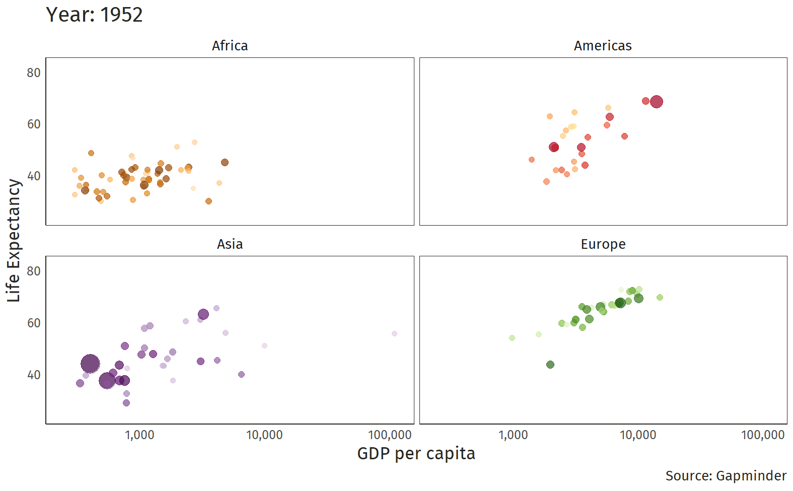
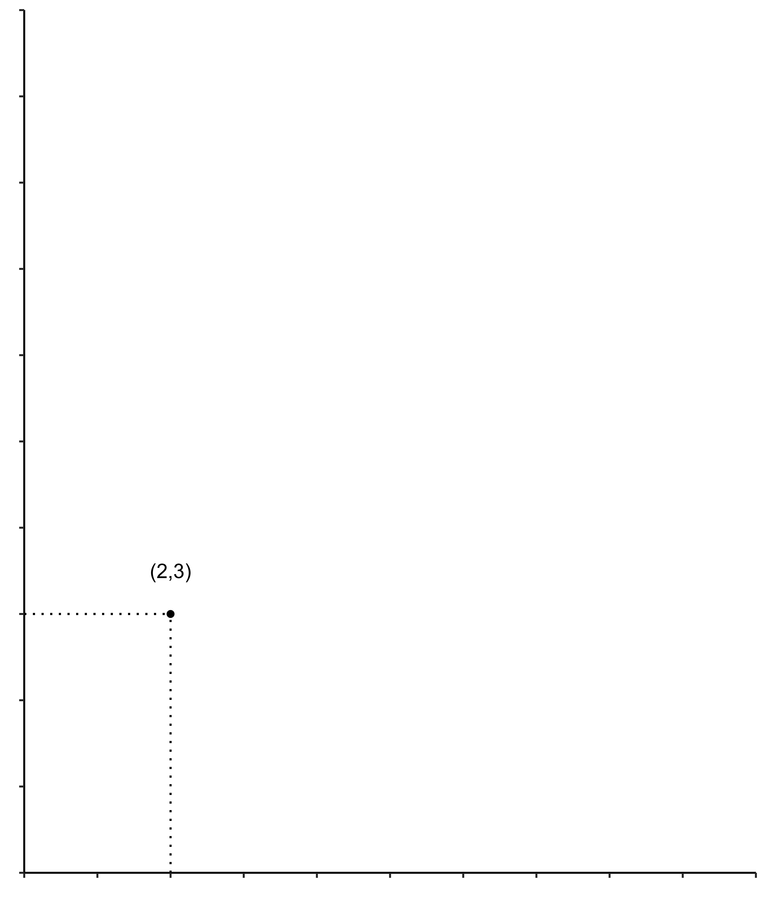

Fundamentos de Teor√≠a Economica ü´¢
Diseño y Evaluación de Proyectos
![]()
Presentación
- Como vamos?
- Vamos a tratar de aprender algo
- Pregunte por lo que no entienda
- Formato de la clase (participación, comentarios y retarnos)
Quién soy?
- Profesor del Departamento de Economía
- Preferencia por temas de innovación, data science, economía de la decisión y economía laboral
- Correo:
cayanes@uninorte.edu.co
Esquema del Curso
- Clases presenciales la asistencia es importante
- Notas y calificaciones:
Un cuadro que requiere de atenci√≥n üßê
| Requerimientos | Fechas | Ponderador |
|---|---|---|
| Participación | Durante todo el curso | 10% |
| Entregables (3) | A solicitud | 20% (cada entrega) |
| Test | entre semanas | 30% |
♠ Las notas de los test son individuales. Los entregables si pueden ser en grupo
Esquema del Curso
- Dedicado a analizar y presentar datos e información microeconomica y macroeconómica.
- Las clases tienen Ejemplos, para mejorar la explicación o dar mayor claridad. La parte concerniente de Trabajos en clases son actividades complementarias a la formación de lo/as estudiantes.
- Por ello, este curso combinará principios teóricos con análisis del mundo real. De este modo, podrá tener un espectro mayor de análisis de las cosas.
Fuentes de información
Conceptos básicos
Conceptos básicos
- Una buena guía de abordaje del tema de economia esta en : libros de Openstax
- No se puede olvidar la definición de economía
Warning
La economía analiza las decisiones de la sociedad y cómo esas decisiones del presente y del pasado se reflejan en los resultados del futuro.
- Independientemente de la definición que usted elija, lo más importante es que estudiar Economía proporciona un conjunto de herramientas para analizar críticamente los problemas sociales en sus aspectos económicos cuantitativos y cualitativos.
Conceptos básicos
- Tenga en cuenta el siguiente ejercicio:
Ejercicio
Hace unos 30 años, una cesta de bienes tales como (huevos, leche, pollo y mantequilla) costaban unos $500. Hoy, esa misma cesta puede costar unos 290.000 mil pesos COP.
¿Qué ha cambiado desde entonces?
Conceptos básicos
Conceptos básicos
El principal problema en economía es que hay que reconocer que todo es escaso.
El agua, los bosques, el cobre, los osos pandas, el aire limpio.
El tiempo, la calidad de de vida (medido en esperanza), la concentración.
No existen los suficientes bienes para satisfacer las necesidades ilimitadas de los individuos. (Escasez)
- Sin embargo… por lo pronto nos las arreglamos
Conceptos básicos

Descripción
Descripción del curso
Este curso proporciona los principios de econom√≠a para tener presente en la evaluaci√≥n de proyectos, centrado exclusivamente en los conceptos de la econom√≠a en general utilizando elementos básicos de cálculo diferencial üò¢ y de alguna manera de la estad√≠stica üò¨
Se hace énfasis en el lenguaje matemático.
Teoría Económica
Teoría Económica
Estudia el proceso de producción y distribución de los bienes y servicios elaborados en la sociedad, desde los puntos de vista micro y macroeconómico.
- Desde la microeconomía se estudia la conducta de los agentes económicos individuales, los mercados y sus interrelaciones, a través del análisis de las variables que afectan los precios “relativos” de los bienes y servicios.
Desde la macroeconomía se estudia el funcionamiento de la economía con base al nivel general de precios.
Teoría Económica
- ¿Qué es una “economía”?
- ¿De dónde surgen los agregados (“PIB”, “desempleo” e “inflación”)?
- Microeconomía: Opciones y consecuencias
- Macroeconomía: Interacción sistémica de los tomadores de decisiones y comportamiento emergente
Teoría Económica
Microeconomía
| Analiza | Se basa en | Determina |
|---|---|---|
| Conducta de los Consumidores | Curva de Demanda | Teoría de la Utilidad |
| Conducta Productores | Curva de oferta | Teoría de la Producción |
| Precios relativos | Oferta-Demanda | Elasticidad |
| Conducta del Estado | Control y regulación | Regulación |
Teoría Económica
Economistas parece que hablan un idioma raro…
Términos que “conoce” de la vida cotidiana tienen significados muy diferentes para los economistas
Costo, eficiencia, bienestar, competencia, marginal, equilibrio, ganancia, bien público, discriminación, elasticidad
Usar los significados “ordinarios” de estas palabras puede llevar a conclusiones económicas incorrectas!
idea
¡Necesita “aprender” los significados económicos de estas palabras!
Teoría Económica
Jerga económica
Tasa marginal de sustitución, costo marginal, excedente del consumidor, eficiencia asignativa, externalidad

Incentivos
Incentivos
Incentivos
Las personas, instituciones, responden a estimulos
Incentivo
Es un estímulo o recompensa que se ofrece para motivar a una persona o grupo a realizar una acción específica o comportarse de cierta manera. Los incentivos pueden ser positivos, como bonificaciones o premios, o negativos, como multas o sanciones, y son utilizados para alinear los intereses individuales con los objetivos organizacionales o sociales.
- La gente responde a los incentivos:
Dinero, castigo, impuestos y subsidios, riesgo de lesiones, reputación, ganancias, género, esfuerzo, moral
- Los entornos se ajustan hasta que están en equilibrio
Incentivos
La gente ajusta sus elecciones hasta que sean óptimas, dadas las acciones de los demás.
Suponga por ejemplo:
El gobierno nacional ofrece un subsidio de $3500 por cada cola de ratón que entreguen las personas. ¿Qué creen que ocurrirá?

Incentivos
¡Consecuencias no intencionadas!
- La gente responde a (cambios en) los incentivos.
- La gente tiene metas/objetivos que busca alcanzar.
- Hacer que una alternativa sea más costosa no significa que la gente deje de perseguir/conseguir sus metas.
- La gente buscará métodos alternativos (menos preferidos) para alcanzar sus metas.
Incentivos
- La cultura del atajo siempre va estar presente, inclusive en los proyectos que deba designar o realizar.
- La/s personas/gente buscaran la manera de bloquear o saltar
- Siempre inclusive hay que tratar de resolver con creativos nudges
incentivos
Equilibrio
Equilibrio
Suponga que hay 2 caminos que conectan a Puerto Colombia con Barranquilla
100 carros transitan
Tiempo en carril compartido : 15 min + 1 min/carro
Doble calzada 20 minutos (siempre)
Equilibrio
Suponga que hay 2 caminos que conectan a Puerto Colombia con Barranquilla
100 carros transitan
Tiempo en carril compartido : 15 min + 1 min/carro
Doble calzada 20 minutos (siempre)
Optimización: Van a escoger el camino que minimiza el tiempo
Equilibrio
Suponga que hay 2 caminos que conectan a Puerto Colombia con Barranquilla
100 carros transitan
Tiempo en carril compartido : 15 min + 1 min/carro
Doble calzada 20 minutos (siempre)
Escena 1: Menos de 30 carros en carril
Equilibrio
Suponga que hay 2 caminos que conectan a Puerto Colombia con Barranquilla
100 carros transitan
Tiempo en carril compartido : 15 min + 1 min/carro
Doble calzada 20 minutos (siempre)
Escena 2: Mas de 30 carros en carril
Equilibrio
Suponga que hay 2 caminos que conectan a Puerto Colombia con Barranquilla
100 carros transitan
Tiempo en carril compartido : 15 min + 1 min/carro
Doble calzada 20 minutos (siempre)
Equilibrio: Cuantos Carros debe haber en cada vía(?), Por?
Equilibrio
Suponga ahora que el estado interviene y doblega el carril normal
Tiempo en carril compartido : 15 min + 0.5 min/carro
Doble calzada 20 minutos (siempre)
Esto reduce el tiempo de viaje?
Si!!, 30 carros antes se gastaban 20 minutos ahora solo 15 min!!
Equilibrio
1970: One more lane will fix it.
‚Äî Urban Planning & Mobility üö≤üö∂ ‚ôÇÔ∏èüöÜ (@urbanthoughts11) November 4, 2019
1980: One more lane will fix it.
1990: One more lane will fix it.
2000: One more lane will fix it.
2010: One more lane will fix it.
2020: ?pic.twitter.com/NjS1IPORG2
via @avelezig
Equilibrio
Estática comparativa: examinar los cambios en los equilibrios provocados por un cambio externo (en los incentivos, las restricciones, etc.).
flowchart LR
A(Equilibrio 1) --> B{Cambio en el sistema}
B --> C(Equilibrio 2)
Equilibrio
Las personas aprenden todo el tiempo e inclusive cambian su comportamiento. Siempre buscan o “tienden” a buscar la opción de mayor valor
Si no hay mejores alternativas, entonces podemos decir que esa persona se encuentra en un optimo
Pendiente!
Todo estará en un optimo \(\Leftrightarrow\) el sistema esta en equilibrio
Todo esto es raro…
Economía: Un sistema donde se coordinan las actividades productivas de una sociedad
Economía de Mercado: Es una economía donde se toman decisiones de producción y consumo de bienes y servicios
Mano invisible: La forma en la cual los individuos persiguen a como de lugar su propio bienestar, sin embargo eso conlleva a resultados mejores para una sociedad como un todo
Matemáticas en economía
Repaso Matemático

Los economistas suelen «hablar» en modelos que explican y predicen el comportamiento humano
El lenguaje puro de los modelos son las matemáticas
Cosas que son universalmente ciertas, deducibles a partir de axiomas, pueden detectar errores fácilmente a menudo ecuaciones y gráficos esto es lo que más asusta a muchas personas que quieren aprender de economía
Repaso Matemático
Considere la siguiente expresión:
\[2+2=4\]
Cualquiera puede hacerlo…
Ahora mire a continuación:
\[2+2=\sqrt{16}\]
No todos pueden hacerlo…
Repaso Matemático
Nuevamente mire a continuación:
\[3!-\left[1+\sum \limits_{p=1}^{\infty}\frac{1}{2^{p}}\right]=\sqrt{16}\]
Ahora si que pocos podrán hacerlo…
- Conociendo de lo anterior ya usted tiene varias formas de obtener una respuesta.
Repaso Matemático
- Que tan bueno deriva(?)
- Muchas cosas se miden con cambios, por ello se hace uso de las derivadas.
- Mire a continuación la siguiente expresión:
\[f(x)=2x^2-3x-y\]
Derive con respecto a (x), es decir halle \(f'(x)\)
La respuesta es \(f'(x)=4x+3\)
Los economistas a veces la igualan a cero (0). Con eso podrá obtener el máximo o el mínimo de una función.
Repaso Matemático
- Piense por un momento en lo siguiente:
Está planeando un viaje a Bogotá. Para llegar, puede coger un bus o volar. El Bus de Barranquilla a Bogotá tarda 14 horas y cuesta 130 mil pesos. Un vuelo de Barranquilla a Bogotá tarda 1 hora y cuesta 970 mil pesos el billete. Decide coger el Bus. ¿Cuánto valoras tu tiempo?
Su elección de ir en bus \(\Rightarrow\) es menos costosa que ir en avión \[14\;\text{horas}+130000\leq1\; \text{hora} + 970000\]
Vamos a restar 130 mil de cada lado \[14\;\text{horas}\leq1\; \text{hora} + 840000\]
Repaso Matemático
Despejamos las horas (uso de términos cómunes) \[14\;\text{horas}- 1\text{hora}\leq\;840000\]
Solo queda restar y dividir \[13\;\text{horas}\leq\;840000\]
Note que \(1\; \text{hora}\leq 64615\)
Presupuesto
Presupuesto
- Piense que usted desea dos bienes
- Estos son \(\{X, Y\}\)
- Las cantidades son 2 y 3 respectivamente

Presupuesto
- Si tiene 100 y desea gastarlo en \(\{X,Y\}\), cuantas unidades serian?
- Solo aquellos que sean asequibles
- El presupuesto es una línea que se representa como \(m\)

Presupuesto
- Probando